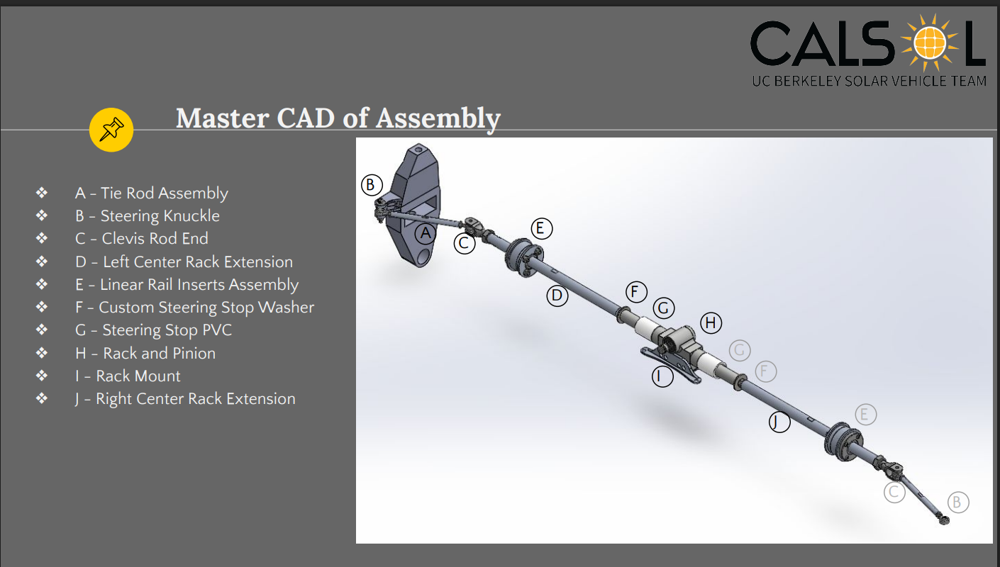
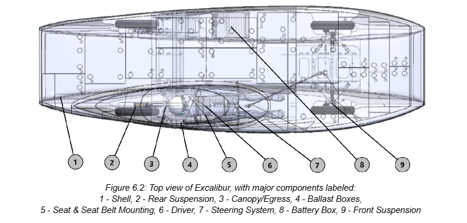
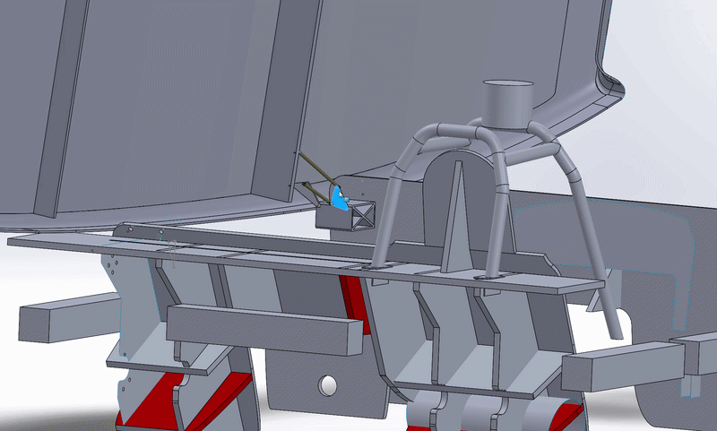

Steering & Stability Lead — Designed and analyzed vehicle subsystems for a high-performance student formula race car.

As Steering & Stability Lead on CALSOL, I was responsible for the design, analysis, and integration of vehicle steering and stability systems on a student-built formula-style race car.
High-performance student race vehicles require tightly integrated mechanical systems that balance responsiveness, stability, and driver control under rapidly changing dynamic loads.
Work was divided across three key engineering areas:
Developed steering geometry and linkage architecture to improve responsiveness and reduce mechanical play under load.

Performed system-level stability evaluation to understand vehicle response under dynamic cornering and loading conditions.

Modeled and validated system behavior under tilt conditions to evaluate structural alignment and response consistency.
Contributed to full vehicle integration by ensuring stability and steering systems functioned reliably under real-world dynamic conditions.